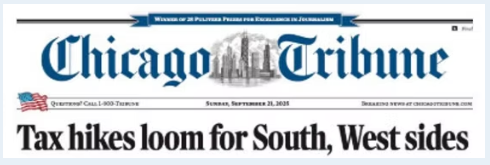
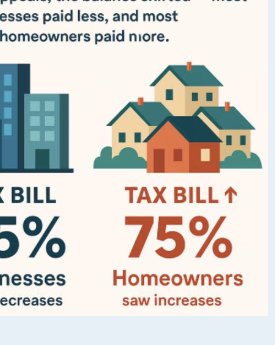
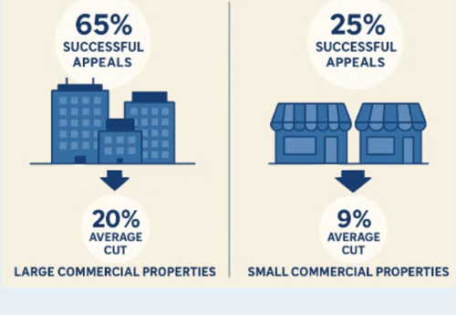

Palos Township (Tax Year 2023, billed 2024): Homeowners experienced a median property tax increase of 19.9% — the largest median jump for any reassessed area in nearly three decades.
Commercial properties have seen big tax cuts since the pandemic: After filing appeals, many commercial properties had their tax bills significantly reduced, which means homeowners now pay a larger share of the overall tax load.
Why it matters:
Cook County's property tax system is based on a fixed levy — when commercial assessments decline, the total tax bill doesn't shrink; instead, the burden redistributes, forcing homeowners to absorb more. The combined effects of post-COVID commercial devaluation and appeals have produced double-digit residential tax increases, especially in middle-class south suburban communities like Palos Township.

